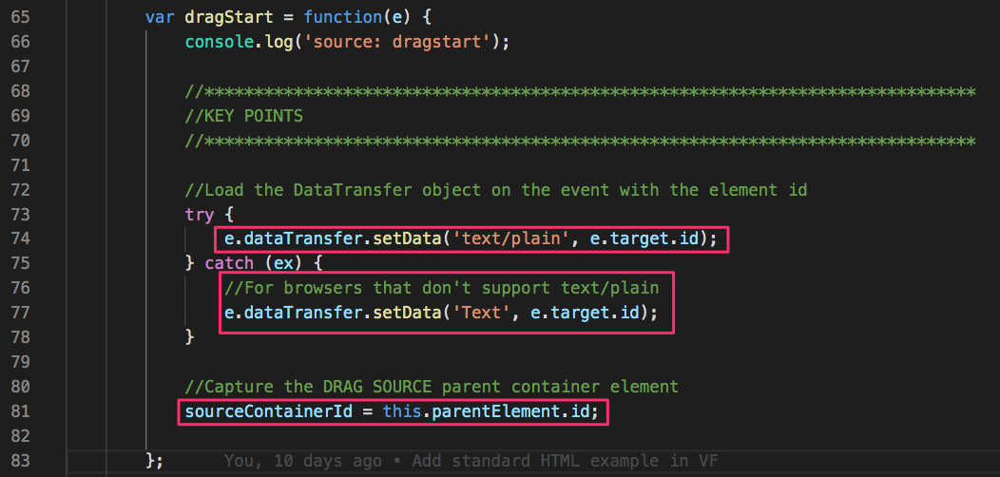
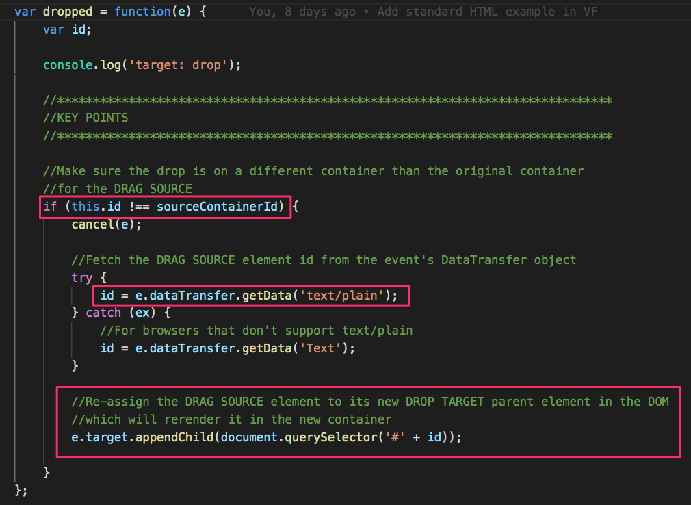
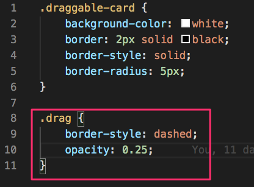
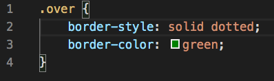
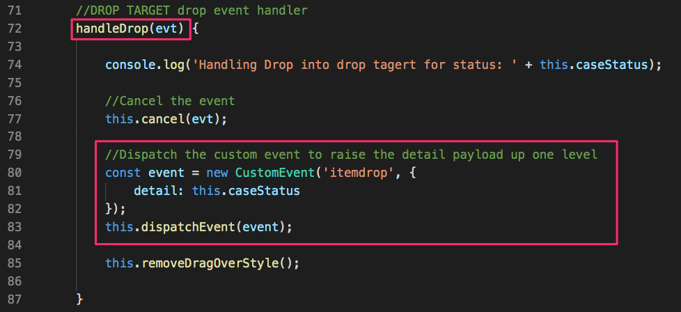
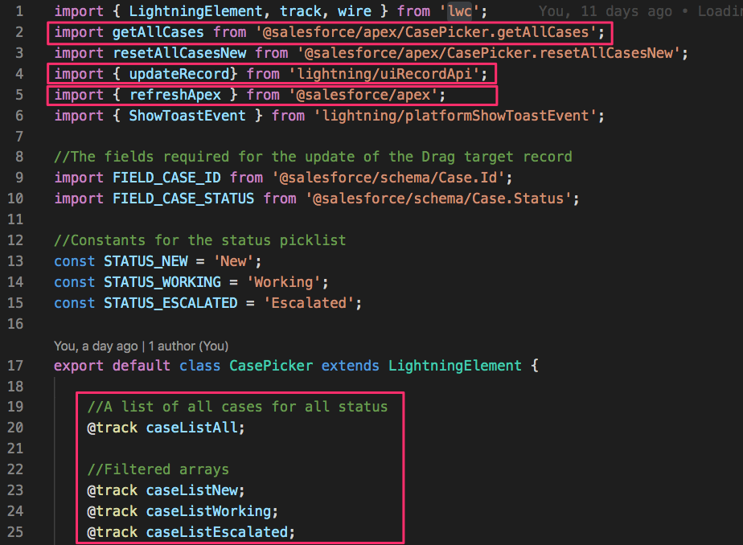
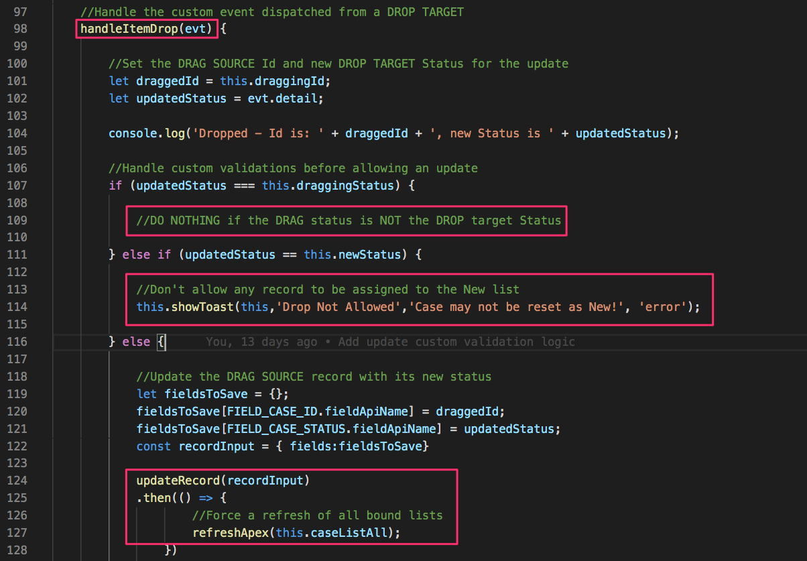

Get the Presentation link

Don Robins
Technical Educator
8x Salesforce MVP
Salesforce Certified PDII
Salesforce Training Partner
Salesforce Certified Instructor
Author of Books, Posts, Articles, Trailhead
Pluralsight "Salesforce Play by Play" Producer
Topics
Drag and Drop Use Cases
What is Drag and Drop
Drag and Drop Concepts
Standard HTML with Visualforce
Tightly vs Loosely Coupled LWCs
Where to Learn More
We Will Not Dig Into
Full Drag and Drop JavaScript API
Drag and Drop in Aura
Drag and Drop in non-HTML Platforms
Mobile and Gesture Based Drag and Drop
Salesforce Use Cases

Kanban
Salesforce Use Cases

Mapping Locations
Salesforce Use Cases
Uploading Files
drag and drop
noun
a programmatic mechanism whereby a
user can select and move an element
to another area on the page
Let's Break It Down
User "Clicks" on a displayed element
User "Drags" it across the screen
User "Drops" it somewhere else on the screen
The element appears at the new location
Associated logic may affect data
How Does It Work in HTML?
Movable Elements set as "Draggable"
Container Elements set with Listeners
Event Listeners bind to JavaScript Handlers
Handlers set DTO Payload and Drop Effects
Handlers manipulate the DOM and Data
Only some Handlers are required
Two Types of HTML Elements
Draggable Element
the selected element
being Dragged from
a source container
to a target container
(ie. URL, Image, etc.)
|
Target Container
a container element
the selected element can
be Dragged over and/or
Dropped into
(ie. Div, List, etc.)
|
Each Type Has Its Own Events
|
Draggable Element
DragStart*
Drag
DragEnd
|
Target Container
DragEnter*
DragOver*
DragLeave
Drop*
|
There are often multiple Target Containers
(Draggable Element)
The DragStart* event
Fires when an element is first Dragged
Handling this event is REQUIRED
Captures the element Id of the Dragged Element
Captures the element Id of the Source Container
Loads the Data and Drop Effects in the Event DTO
Typically used to set the CSS presentation
(Draggable Element)
The Drag event
Fires as an element is being Dragged
Continues to fire every few hundred milliseconds
Handling this event is OPTIONAL
Typically used to affect the CSS presentation
(Draggable Element)
The DragEnd event
Fires as a Drag operation ends
Handling this event is OPTIONAL
Typically used to reset the CSS presentation
(Target Container)
The DragEnter* event
Fires as item enters a valid Drop target
Handling this event is REQUIRED
The handler MUST call preventDefault()
Typically used to reset the CSS presentation
(Target Container)
The DragOver* event
Fires as item is Dragged over valid Drop target
Continues to fire every few hundred milliseconds
Handling this event is REQUIRED
The handler SHOULD call preventDefault()
Typically used to reset the CSS presentation
(Target Container)
The DragLeave event
Fires as item leaves a valid Drop target
Handling this event is OPTIONAL
Typically used to reset the CSS presentation
(Target Container)
The Drop* event
Fires as item is dropped on a valid Drop target
Handling this event is REQUIRED
The handler SHOULD call preventDefault()
Processes DOM changes to the Dragged element
Processes any required data or logic
Typically used to reset the CSS presentation
How do you implement
Standard HTML
Drag and Drop
in Salesforce?
Implemening Standard HTML
Drag and Drop in Visualforce

HTML Multiple Containers

Declare collection of Div Containers
Draggable Element
(in the 'New' source container)
 Set Source Container and Draggable Item
Set Source Container and Draggable Item
Potential Drop Target Container
(the 'Working' container)
Set Container as Drop Target
Potential Drop Target Container
(the 'Escalated' container)

Set another Container as Drop Target
Setting Up The Event Listeners

Use selectors to fetch elements and add Listeners
DragStart Event Handler

Capture Item and Container Ids
Drop Event Handler

Fetch Item Id and reparent to Target Container
How do you implement
HTML Drag and Drop in
Lightning Web Components
LWC vs Standard HTML Differences
Both Manipulate the DOM but Differently...
Use LWC to broker the events
Abandon Event DTO and Drop Effects...
Use Custom Event and Data Payload Instead
Facilitates Data Manipulation...
Use Data Driven Reactive Rendering
(LWC avoids standard DOM Manipulation!)
Key Points
LWCs declare and handle Drag and Drop
events and broker them with Custom Events.
These messages travel up the Component
Hierarchy to a top level Master Component.
The Master Component fetches and updates
all data bound to tracked properties.
Changes to tracked properties trigger
reactive rerendering back down through
the component hierarchy refreshing the UI.
Two Architectural Approaches
Tightly Coupled
components can
be dragged to and from
source and target container
components
|
Loosely Coupled
container components
added to a Flexipage
by an App Builder and
communicate with PubSub
|
Tightly Coupled Components
Loosley Coupled Components

Draggable Component: Markup
(caseItem.html)

Set Item as Draggable and wire its events
Draggable Component: Style
(caseItem.css)

Define the Item Component's Drag style
Draggable Component: Module
(caseItem.js)

Set Drag style and broker the Drag event
Container Component: Markup
(caseList.html)

Wire up both Container and Item events
Container Component: Style
(caseList.css)

Define the Container's DragOver style
Container Component: Module
(caseList.js)

Handle events that change Container style
Container Component: Module
(caseList.js)

Use helper functions to set and reset Styles
Container Component: Module
(caseList.js)

Broker the Item's DragStart event
Container Component: Module
(caseList.js)

Broker the Container's Drop event
Master Component: Markup
(casePicker.html)

Wire the Container events to the Master
Master Component: Module
(casePicker.js)

Declare Apex and RecordUI imports and lists
Master Component: Module
(casePicker.js)

Use an @wire function to fetch and filter data lists
Master Component: Module
(casePicker.js)

Validate, Update and Refresh data on Drop
Key Points
Understand standard drag and drop events
Don’t fight the framework
Leverage custom events
Leverage data capabilities
Leverage reactive rendering
Use Event Handlers to change style
Use a Master Component for Data Processing
Download and Dissect the Reference App
https://github.com/forcementor/lwc-dnd-demos
Download and Dissect the eBikes App

https://github.com/trailheadapps/ebikes-lwc
Learn Standard HTML Fundamentals

https://pluralsight.pxf.io/C0114
Learn about Short-Stopping Handler Events

Medium.com
Read about the Drag and Drop HTML standard

Mozilla Developer Network
Watch this LWC Primer

https://pluralsight.pxf.io/C0066
Visit the Salesforce Play By Play Gallery
www.sfplaybyplay.com
Search or Filter on Topic, Author, Trailhead Class
www.sfplaybyplay.com
Next steps after the survey:
- Visit our sponsors!
- Follow me @donrobins and on Pluralsight.com
- Keep on learning and share with your Ohana
This presentation is on Github here: